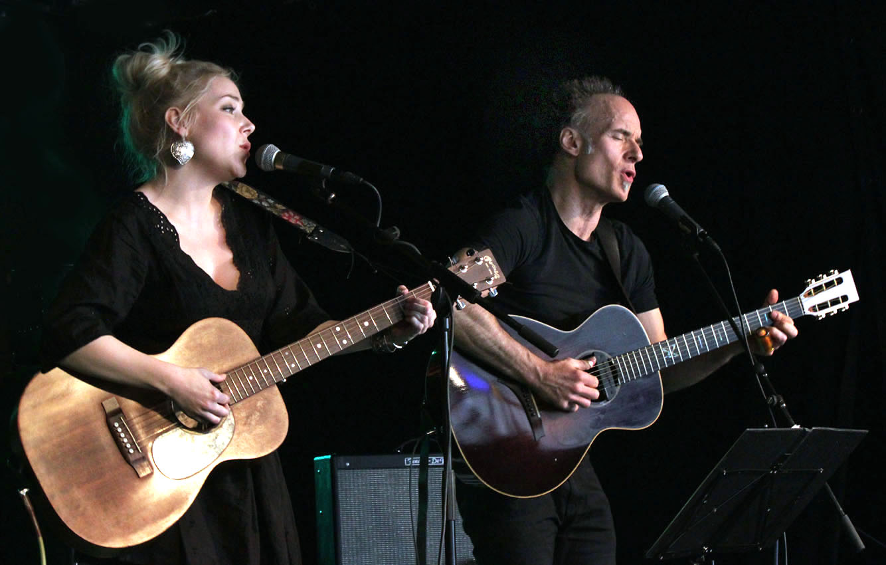
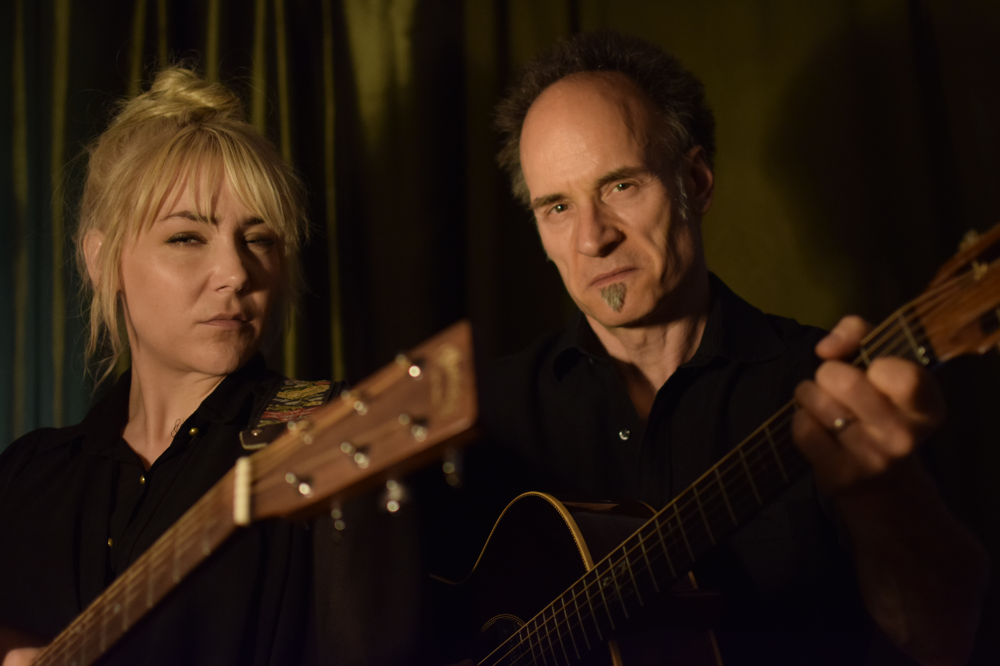

Maria Stille and Homesick Mac — where it all starts. Two guitars, a sofa, and songs from another era.
Let's have a fresh take on the fantastic music of the Delmore Brothers — and on everything that grew around it. Hillbilly, country, blues and early jazz, delivered as a one or two hour all-acoustic show.
I've been listening to Delmore Brothers music for many years — ever since he first heard Doc Watson play "Deep River Blues" on the LP "Live On Stage." I always wished I could play more of their songs, but every collaboration I'd had was with blues musicians who stayed in their lane. The Delmore Brothers felt "too way back" for most, and playing their music in the original setting — two male guitars and vocals — felt like it wouldn't add anything new.
Then I got to know Maria Stille from Malmö through her band Swinging Hayriders, a Western Swing ensemble where she sang. At a later gig, I heard her play a more stripped-down acoustic set — and sing a Dolly Parton song that confirmed what I'd suspected. There's a reason they call Maria Stille Sweden's Dolly.
By the end of that set, I had an idea. I asked Maria if she'd join me to explore the Delmore Brothers catalogue. She loved that "too way back" kind of music, and we started playing — with no bigger plans, just hanging out and enjoying old-timey music together.

Live on stage — two guitars, two voices, one century-old songbook.

Not all old songs have happy endings. The Murder Ballads corner of our repertoire — we may look guilty, but the guitars did it.
One particular song — "Blues Stay Away From Me" — suited us so well that we took time to build a real arrangement for both guitars and both voices. We realised we wanted to perform it. Then we wanted more songs. Then 2–3 songs became 4–5, then 9–10 — opening acts wherever we could.
Soon we had a full programme spanning hillbilly, country, blues and early jazz — up to three sets of acoustic music. We took the name Delmore Sessions to honour that particular period in American music history, while leaving room for the other styles that keep the shows diverse.
We have never recorded together — but we both treasure the project and enjoy every opportunity to perform. The show is available as a one or two hour programme for festivals, associations and acoustic music venues.
Blues Stay Away From Me
New River Train
A Swedish singer, songwriter and guitarist with her musical roots firmly in Western Swing and early country, Maria is one of the most respected voices in that world in southern Sweden. She has toured in Denmark, Norway, Italy and Germany, and collaborated with bands including Sweet Mary, Up The Mountain, Southern Union, Sheating Hearts, and fronted the acclaimed Swinging Hayriders for many years.
Maria is also a well-established studio musician who has performed live with Nina Persson of The Cardigans, Titiyo, Robyn, Daniel Lemma, Anna-Maria Espinosa, Magnus Tingsek, Cecilia Nordlund, Jacob Hellman, Andi Almquist and Lotta Wenglén, among others.
In Delmore Sessions, Maria brings all of that musicianship to a stripped-down, all-acoustic format — and makes it feel like the most natural thing in the world.
Delmore Sessions is available as a one or two hour acoustic show — for festivals, music associations, and venues that appreciate real, honest roots music.